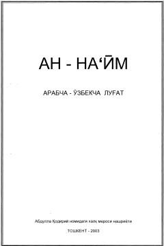

AAHozirgi arab адабий тили лексикасини қамраб olgan keng qamrovli arabcha-o'zbekcha lug'at.
Ushbu arabcha-o'zbekcha lug'at hozirgi arab адабий тили лексикасининг асосий қатламларини ўз ичига олган бўлиб, шарқшунослик ва исломшунослик соҳалари мутахассислари ҳамда талабалар учун мўлжалланган. Луғатни тузишда асосан Х.К. Барановнинг «Арабско-русский словарь» китобидан фойдаланилган. Китоб ўзбек арабшунослигида муҳим қўлланма ҳисобланади.